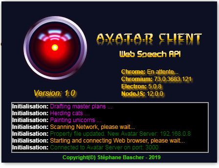

Démarrer
Depuis le répertoire du client, démarrez l'application en cliquant sur l'exécutable AvatarWebAPIClient.exe
Important: Il est nécessaire que le Serveur A.V.A.T.A.R soit démarré pour que le client s'y connecte.
Lors de la première connexion à Avatar:
- Votre Pare-feu Windows peut vous demander d'autoriser l'accès au réseau, répondez oui
- Le navigateur vous demandera l'accès au microphone, répondez oui.
Si c'est une première connexion, la fenêtre suivante apparait:
- Après avoir installé les composants nécessaires et lu la documentation
- Entrez le nom du client sur le réseau A.V.A.T.A.R
- Entrez la plage de recherche automatique du serveur A.V.A.T.A.R:
- Les clients sont capables de rechercher le serveur sur le réseau. Utile si vous avez un réseau DHCP et que les adresses peuvent changer.
- La plage de recherche commence toujours par les 3 premiers nombres compris entre 0 et 255 de votre réseau IPv4, séparés par des points, ce qui donne par exemple 192.168.0
- La 2ème partie est une plage d'IP définie par 2 nombres compris entre 1 et 99, séparés par un tiret, ce qui donne par exemple 5-40
- Cet exemple donne donc: 192.168.0.5-40 (un point entre la 1ère et la 2ème partie)
- Le client cherchera automatiquement l'adresse IP du serveur sur le réseau dans une plage d'IP comprise entre 192.168.0.5 et 192.168.0.40
- Vous pouvez ajuster une plage de recherche pas trop grande pour que le client ne scanne pas tout le réseau systématiquement. Par exemple, 5 en dessous et 5 au dessus de l'adresse IP du serveur.
- Accessoirement, vous pouvez modifiez le port de connexion avec le serveur si vous avez défini un autre port de connexion.
- Cliquez ensuite sur le bouton "Valider". Le client trouve le serveur et se connecte puis ouvre la fenêtre principale de l'application:

Si vous avez rentré une mauvaise plage de recherche, fermez l'application par l'icône "A.V.A.TA.R Web Speech API client" de la barre de tâches puis relancez-la.
Tous ces paramètres peuvent être changés ensuite par les fonctions vitales.
Astuce:
Dans un environnement domotique, Avatar fonctionne continuellement.
Vous pouvez alors créer un raccourci Windows dans le dossier "démarrage" pour qu'il soit exécuté automatiquement au démarrage du PC:
- Dans la barre de tâches, cliquez sur le menu "Démarrer"
- Dans la barre de recherche, entrez la commande shell:startup
- Dans la fenêtre qui s'ouvre, clique droit => Nouveau => Raccourci
- Allez dans le répertoire d'Avatar et sélectionnez le fichier AvatarWebAPIClient.exe
- Donnez un nom au raccourci
- A chaque démarrage du PC, le client sera automatiquement démarré
Avatar Serveur affiche la connexion du client:

Créé avec HelpNDoc Personal Edition: Écrire des livres électroniques ePub pour l'iPad